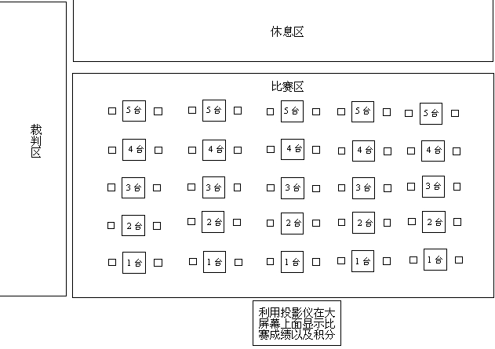

今天排下来的效果很象国际大赛的比赛场地
今天排下来的效果很象国际大赛的比赛场地
今天进行了友谊赛，感觉有点混乱，自己心中有些设想：
每一排一个裁判，5个裁判，一个主裁判负责记录比分，一个主裁判负责往电脑里面输入成绩，在投影仪上面显示！一个边裁负责安排比赛队员入场！
一场比赛结束，队员可以到休息区休息，等通知第二轮比赛再入坐！
好方法！就这么着，你做主裁判！
建议设裁判长1人（如果赛区多，则各赛区设裁判长1人，总的比赛设总裁判长1人）、副裁判长若干（根据实际情况确定）、裁判员若干（负责赛场内秩序和裁判及成绩录入）、工作人员若干（负责赛场外纪律和引领工作）。
同时为了避免可能存在的争议及无法预测的情况，建议设立仲裁委员会，由组委会主任兼任仲裁委员会主任，组委会副主任1人（分管裁判工作）、秘书长兼任副主任，人数众多的情况下，可以设立专职副主任确认，委员由裁判长（可以兼任仲裁委员会副主任）、领队、选手共同组成。
顾老师可真够专业啊
今天排下来的效果很象国际大赛的比赛场地
有志，药师你们辛苦了
刀子支持你们